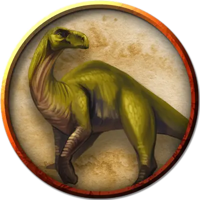

Гадрозавр
Hadrosaurus
Большой Зверь (Динозавр), без мировоззрения

Класс Доспеха 11 (природный доспех)
Хиты 19 (3к10 + 3)
Скорость 40 футов
| мод | спас | ||
|---|---|---|---|
| СИЛ | 15 | +2 | +2 |
| ЛОВ | 10 | +0 | +0 |
| ТЕЛ | 13 | +1 | +1 |
| мод | спас | ||
|---|---|---|---|
| ИНТ | 2 | −4 | −4 |
| МДР | 10 | +0 | +0 |
| ХАР | 5 | −3 | −3 |
Навыки Восприятие +2
Чувства пассивное Восприятие 12
Опасность 1/4 (50 опыта)
Бонус мастерства +2
Среда обитания Болото, Луг
Действия
Хвост. . Рукопашная атака оружием: +4 к попаданию, досягаемость 5 футов, одна цель. Попадание: 7 (1к10 + 2) дробящего урона.
Описание
Гадрозавр – это четвероногое травоядное, ходящее на двух ногах, которое можно узнать по костяному гребню на голове. Если выращивать их с детства, то их можно обучить перевозке всадников.